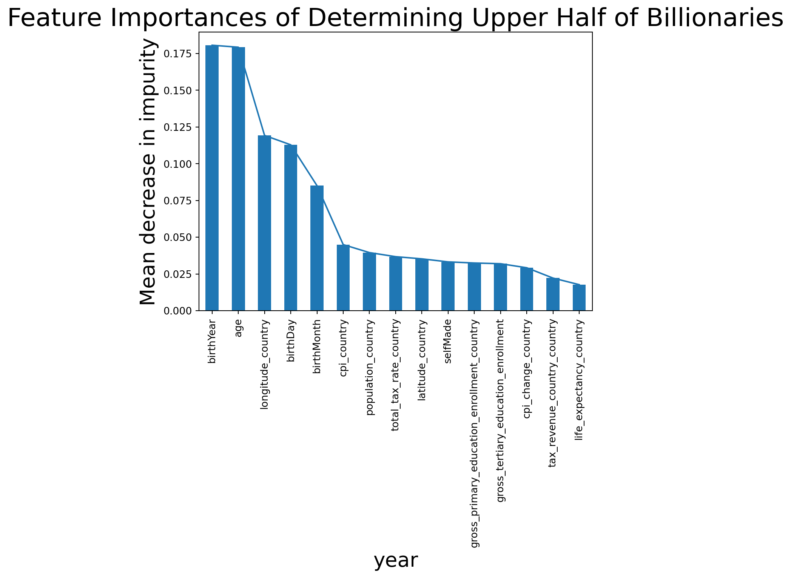

Simply put, ensemble models are the culmination of multiple other models with the goal of strengthening the overall prediction capabilities. A lot of issues can arise when only utilizing one model. We’ll look into what those issues are later, but for now let’s use an analogy of a visit to the doctor to describe the basics of ensemble models. Let’s say that you are suffering from an undiagnosed ailment, and you would like to figure out what it is. To do so, you’ll take a trip to your doctor’s office, and receive a diagnosis. There they tell you that it is probably nothing. However, you are not convinced of this diagnosis, so you travel to another doctor for a second opinion. This one diagnoses you with a life threatening condition, and you need immediate treatment. Now you have two very different diagnoses, so you might seek out a third, fourth, maybe even fifth opinion to really get to the bottom of what this issue is. In the end, you’ll follow the procedure and diagnosis that most doctors you saw agreed upon. Machine learning is very much similar with algorithms predicting an outcome like the doctors were providing a diagnosis. With a single model, you can receive inaccurate results as a doctor provided an incorrect diagnosis. Ensemble models solve this issue just like gathering the opinion of other doctors can provide a more accurate diagnosis. Firstly, an ensemble model combine a multitude of individual models. Then a single input is passed through each individual model, so a collection of outputs are produced. These outputs are the predictions, and the ensemble model can select its overall prediction from the collection. Most likely, the selected prediction will be either the most frequently appearing prediction from the individual models, or it is some average value of the predictions. Now, we can see that the utilization of ensemble models solves the issues of single models by potentially increasing accurracy while lowering the error.
What Are Decision Trees
For each of the models discussed here, they will create a multitude of smaller decision tree models. One of the more common types of decision tree is a binary decision tree. This is a tree structure where each inner node is a yes/no decision to make, and each node has two branches, one yes and one no. An input value is passed in and the decisions are made one by one down the tree until a leaf node is eventually reached. These leaf nodes contain the final prediction that the model will make for the given input.
Commonly Used Ensemble Techniques
Both of the techniques discussed can be applied to regression or classification trees with subtle differences in each. Using regression trees will oftentimes have the selected prediction being the average of the individual models. On the other hand, the ensemble will take the most frequent occurrence if classification trees are used. ### Bagging The first of the two techniques we will discuss is known as bagging or bootstrap aggregation. Here there is one training set, and a multitude of tree models will be constructed from that training set. The difference between the models is that each one is trained with a different subset of the training set. Each subset will be equal in size, and the values in each will reflect the values of the training set. However, to make each subset unique and equal in size, it will allow for repeated entries. The result is a set of unique subsets which train a set of tree models of the same size. These models then each individually predict the outcome of an input, and either the average or most common prediction is chosen. ### Random Forest A random forest ensemble model is very similar to the bagging ensemble model, but there is one key difference. Each node can only be split on a random selection of predictors. With most datasets, certain predictors are more significant than others, and this approach means that the more significant predictors might be found lower on the tree. Now a collection of these models will produce very different results. With these different models, the same approach of taking the average or most common prediction of these models can then be used.
Random Forest Ensemble Model: An Analysis of Billionaires Amongst Billionaires
In this example, we are going to analyze a dataset of billionaires and their various statistics including age, whether they are self-made, and a variety of statistics regarding their country of citizenship. Our goal is to see if we can use this data to create a model that accurately predicts whether or not a given billionaire is in the upper half of other billionaires in terms of their net worth. ### Importing Libraries
Code
import sysimport matplotlib.pyplot as pltimport numpy as npimport pandas as pdimport mathfrom sklearn.ensemble import RandomForestClassifierfrom sklearn.metrics import accuracy_score, confusion_matrix, precision_score, recall_score, ConfusionMatrixDisplayfrom sklearn.model_selection import RandomizedSearchCV, train_test_splitfrom scipy.stats import randint
Preprocessing Data
For this next step, we will have to do some preprocessing of the data in order to turn each of the values of the table into either a binary 0 or 1. 0s will correspond to a no answer, and 1s will correspond to a yes answer. First we will drop each of the tables that are purely textual including their name, country, city, title, gender, and so on. There is likely very useful information within the dropped data, but for now we will solely focus on the numerical inputs. Then we will utilize a binary classifier to change each entry to either a 0 or a 1. The classifier will be if the entry is less than or equal to the median for 0, or greater than the median for 1. After this step we will be able to begin our model creation, training, and prediction steps.
Here we will split our data into a train and test set. We will first train our model so that it can perform a series of predictions. We will then use the trained model to predict the answers to our test set, and compare them to their true result.
Next we will attempt to improve our accuracy by passing in random sets of hyperparameters, and calculates the score for each. The set with the highest score is then saved to be used to make predictions later.
Best hyperparameters: {'max_depth': 5, 'n_estimators': 335}
Using the Best Hyperparameters to Make Predictions
With the set of the best hyperparameters, we will again test the model against our set aside testing data, and compare the predicted results to their actual values. We will first show our results in the form of a confusion matrix. Afterwards, we will use a bar graph to show the most important predictors in determining the correct value.
Code
# Generate predictions with the best modely_prediction = best_estimators.predict(X_test)# Create the confusion matrixconfusionMatrix = confusion_matrix(y_test, y_prediction)ConfusionMatrixDisplay(confusion_matrix=confusionMatrix).plot();accuracy = accuracy_score(y_test, y_prediction)precision = precision_score(y_test, y_prediction)recall = recall_score(y_test, y_prediction)print("Accuracy:", accuracy)print("Precision:", precision)print("Recall:", recall)
predictorPlot = pd.Series(best_estimators.feature_importances_, index=X_train.columns).sort_values(ascending=False)predictorPlot.plot(x="year", y="people")plt.xlabel("year", size =20)plt.ylabel("Mean decrease in impurity", size =20)plt.title("Feature Importances of Determining Upper Half of Billionaries", size =25)predictorPlot.plot.bar();

Interpreting the Data
Observing the data above, and running the creation and prediction of the model a few times, we can see that there is improvement by tuning the models, if only slightly. When tuning our model to the optimal hyperparameters, we see a roughly 2% increase in accuracy for predicting whether or not a billionaire was in the upper echelon of other billionaires. As it is a binary prediction, a naive dummy classifier could predict either a yes or no everytime and receive a 50% success rate. Our results are better, but only slightly.
We can observe the confusion matrix above to determine a multitude of values, but we will discuss more in depth what these values mean in a different blog post. For now we will just define the values listed above and how they can be interpreted.
Accuracy: The number of predictions that were correct Positive Precision: The number of true positives compared to the number of all predicted positives Positive Recall: The number of true positives compared to the number of all actual positives
Looking at the most important predictors, the ones frequently labelled as the most important, are those centered around age. Birthyear, age, birthday, are always among the top predictors. This makes sense as those who are older have more time to accrue wealth than those who are younger.
Wrap Up
That concludes this blogpost on ensemble models. If you would like to continue learning about ensemble models in general, other models, or either of the models discussed here, I have provided a list of articles used in the creation of this blogpost
builtIn - Ensemble Models: What Are They and When Should You Use Them? (https://builtin.com/machine-learning/ensemble-model) dataiku’s Blog - Tree-Based Models: How They Work (In Plain English!) (https://blog.dataiku.com/tree-based-models-how-they-work-in-plain-english#:~:text=Ensemble%20models%20can%20be%20used,non%2Dlinear%20relationships%20quite%20well.) datacamp - Random Forest Classification with Scikit-Learn (https://www.datacamp.com/tutorial/random-forests-classifier-pythonRandom Forest Classification with Scikit-Learn)
Billionaires Dataset Used - Billionaires Statistics Dataset (2023) by Nidula Elgiriyewithana (https://www.kaggle.com/datasets/nelgiriyewithana/billionaires-statistics-dataset/data)